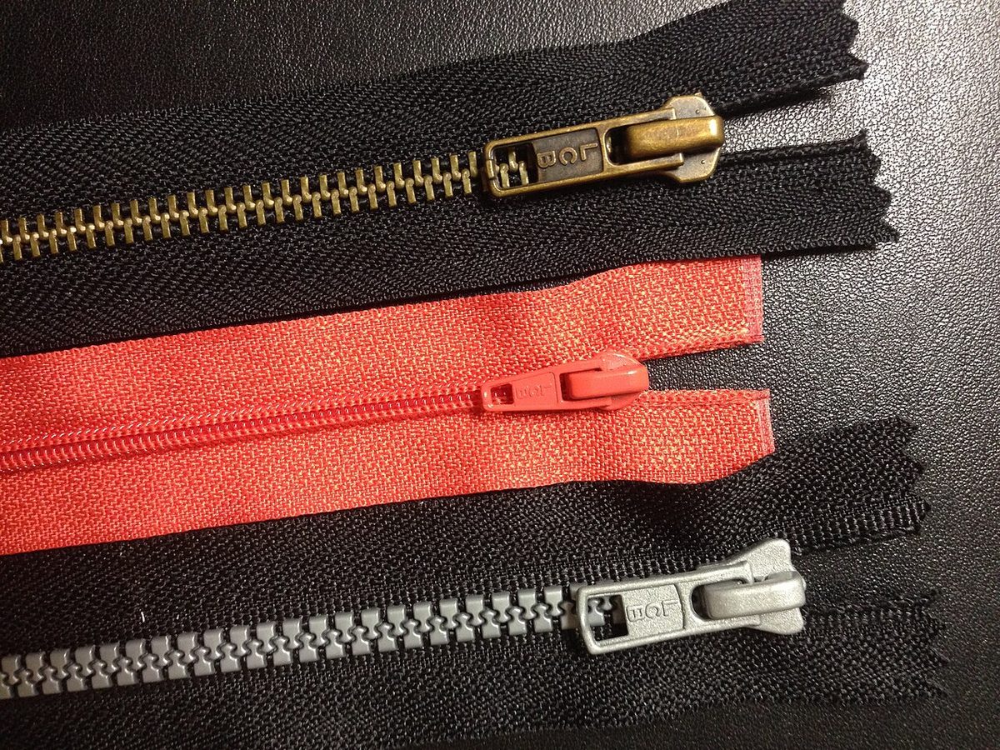
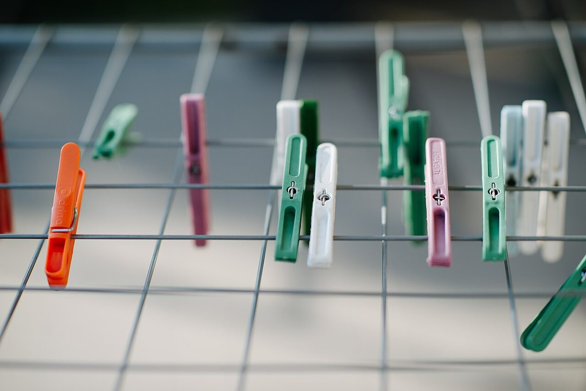

カフェ / 山形県鶴岡市
のぞみカフェnanairo
山形県鶴岡市のカフェ「のぞみカフェnanairo」のご案内ページです。電話番号とInstagramのほかは、準備中のことがまだたくさん。ここでは、分かっていることを七つの定位置に並べました。
七つの定位置
道具は、決まった場所に。
空いている場所も、そのままに。
壁の道具掛けには、道具の形が描いてあり、戻す場所がひと目で分かります。このページも同じ作りです。埋まっているのは、確認できた4つ。点線の3つは準備中です。
- 1店名のぞみカフェ
nanairo - 2所在地山形県鶴岡市北茅原町５−５３
- 3電話0235-26-1787
- 4Instagram@nanairo_n_sketch
- 5営業時間・定休日準備中ここに入る道具は、確認でき次第
- 6メニュー・価格準備中ここに入る道具は、確認でき次第
- 7ご予約・駐車場準備中ここに入る道具は、確認でき次第
制作側の連想
「七」と道具箱
屋号の「nanairo」の響きから、制作側は「七」という数を連想しました。そこで、七つ道具に見立て、道具の写真と七つの定位置でページを組んでいます。お店の理念や名前の由来とは無関係の、制作側の連想です。
壁の道具(イメージ)
掛けてある、置いてある。
写真はお店のものではなく、国外または撮影地不明のフリー素材です。



ご案内
お店のこと(確認できたものだけ)
| 店名 | のぞみカフェnanairo(カフェ) |
|---|---|
| 所在地 | 山形県鶴岡市北茅原町５−５３ |
| 電話 | 0235-26-1787 |
| @nanairo_n_sketch | |
| 営業時間 | 準備中 |
| 定休日 | 準備中 |
| ご予約 | 準備中 |
| 駐車場 | 準備中 |